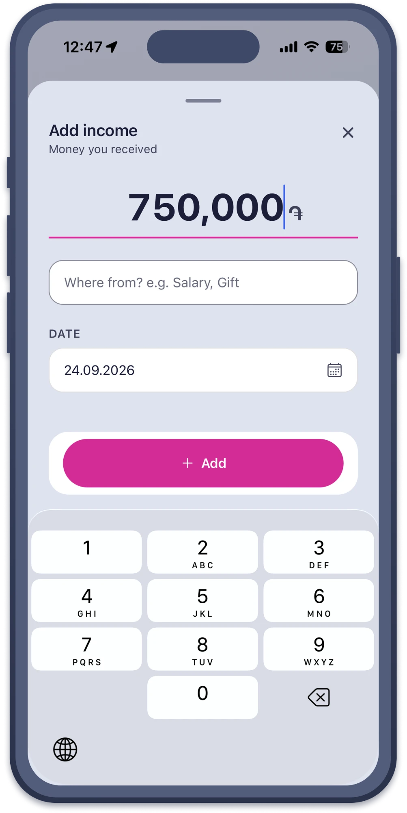
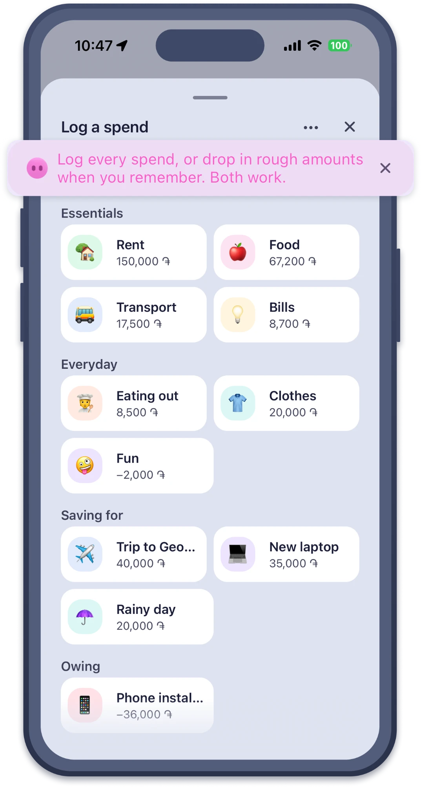
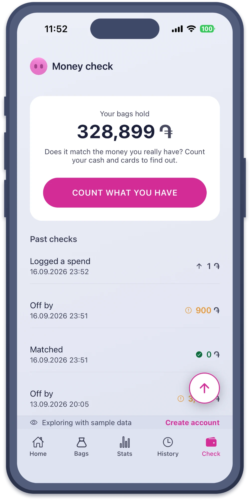
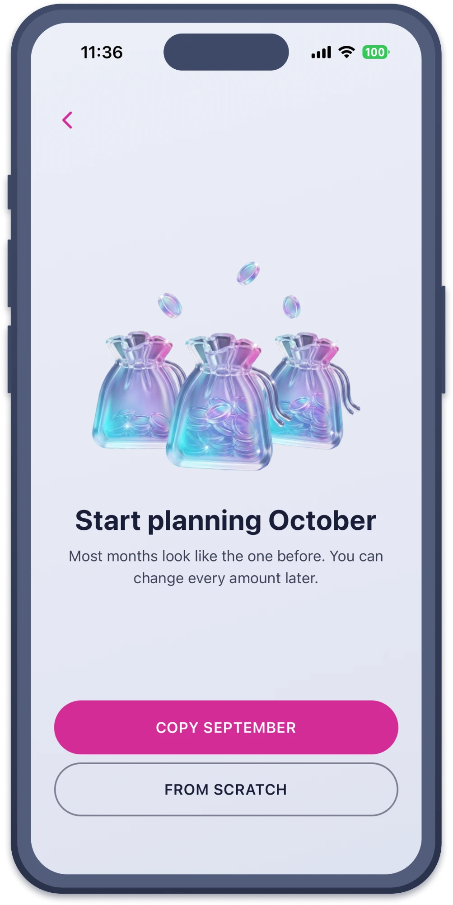
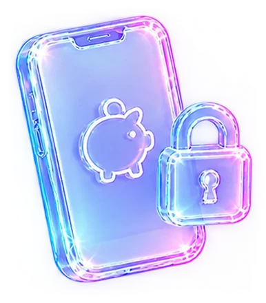
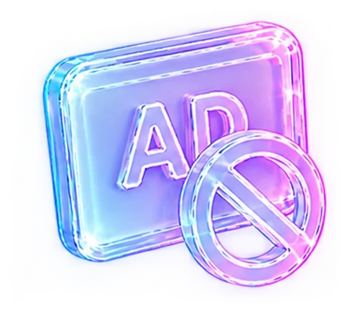

What Piggy does
- Add a bagFor what you spend on, and for what you put aside for.
- Organize bagsInto Essentials, Everyday, Saving for and Owing.
- OwingSay how much you owe, and watch it climb back to zero.
- Plan next monthDecide it before it starts, then fund it as income comes in.
- AllocateGive each bag its share of what came in.
- Log a spendEvery one, or rough amounts when you remember. Both work.
- Money checkCount what you have, and see if Piggy matches.
- StatsSee where the money went, and what to change.
What does a month look like?
Five steps, every month. Tap a number to follow the path.
Money you received: a salary, a gift, anything at all. Say where it came from.
Log every spend, or drop in rough amounts when you remember. Both work.
Most months look like the one before. You can change every amount later.




Putting money into bags. Every time income arrives, you split it between your bags: rent, food, fun.
Does it match the money you really have? Count your cash and cards to find out.
Your data
It stays on your phone
-

No bank login, no server Your account lives on this phone, and so do your numbers. They are not on anyone's server, mine included. - Face ID can lock it Piggy opens for you and nobody else.
- Backups can be locked Add a password before a backup leaves the app, and without it the file cannot be read.
-

No ads, ever Nothing here is paid for by watching what you buy.
Piggy does count anonymous events, such as "a bag was made", to see which parts of the app get used. No amounts, no bag names, no notes, nothing that says who you are. You can switch it off in Settings.
Read the privacy policySupport
Need a hand?
Write and you will get a real answer, from the person who made it.
- Stuck on something
- The support page
- Say hello
- beginyan.arthur@gmail.com
- What is new
- The Telegram channel. Help comes by email.
Budget reviews, one to one
Not sure where to begin?
A video call in Armenian or English. You talk, I listen, and we look at your money together.
From nine years of budgeting, and of helping others start.
The beta
Ready when you are
Piggy is in a closed beta on iPhone, with a small group of testers. Everything is unlocked while it runs, Golden Piggy included. Follow the channel to hear the day it opens.